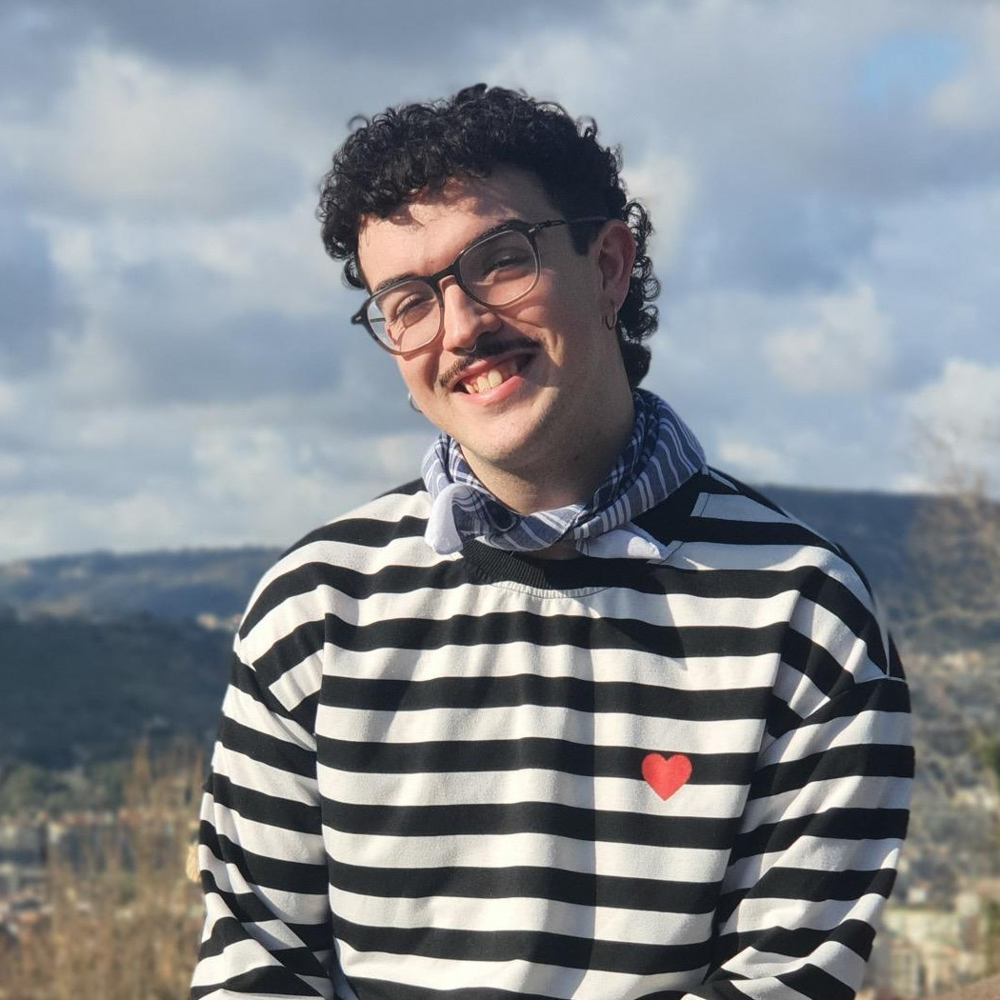

Practica español de forma natural, gana fluidez y pierde el miedo a hablar, en un grupo reducido y cercano.
Ver horarios¿Este horario no te viene bien? Escríbeme tu disponibilidad y vemos opciones.
Soy Jordi, profe de español para extranjeros y examinador oficial del DELE. Soy de Cuenca, en pleno centro de España, así que vas a practicar con un acento claro y fácil de entender. Tengo el Máster en Enseñanza de Español como Lengua Extranjera por la Universidad Internacional de Valencia y antes estudié Traducción y Mediación Interlingüística.
Llevo 3 años dando clase online y presencial, en academias de prestigio de Valencia y con alumnos de todo tipo. Además del español, hablo a nivel nativo catalán, con fluidez inglés, francés e italiano, y me defiendo en portugués, así que sé perfectamente lo que es quedarse en blanco a mitad de frase o no atreverse a hablar por miedo a equivocarse. Justo eso es lo que quiero que pierdas en este curso.
En mis clases nadie se ríe de nadie. Me gusta crear un espacio seguro y cercano, donde equivocarse forma parte del juego y donde cada alumno se siente escuchado. Las sesiones son amenas, con temas que dan de qué hablar y con correcciones que te ayudan sin cortarte el rollo.
Todo esto lo comparto también con más de 30.000 personas en mi TikTok e Instagram (@spanish_with_jordi), donde cada día ayudo a estudiantes de todo el mundo a hablar un español más natural. Y lo que más me gusta de mi trabajo es ver cómo alguien que al principio apenas abría la boca acaba charlando con soltura y sin miedo.
Si tienes dudas sobre qué grupo encaja mejor contigo, cuéntamelas aquí abajo y te respondo lo antes posible.
Te contesto lo antes posible.